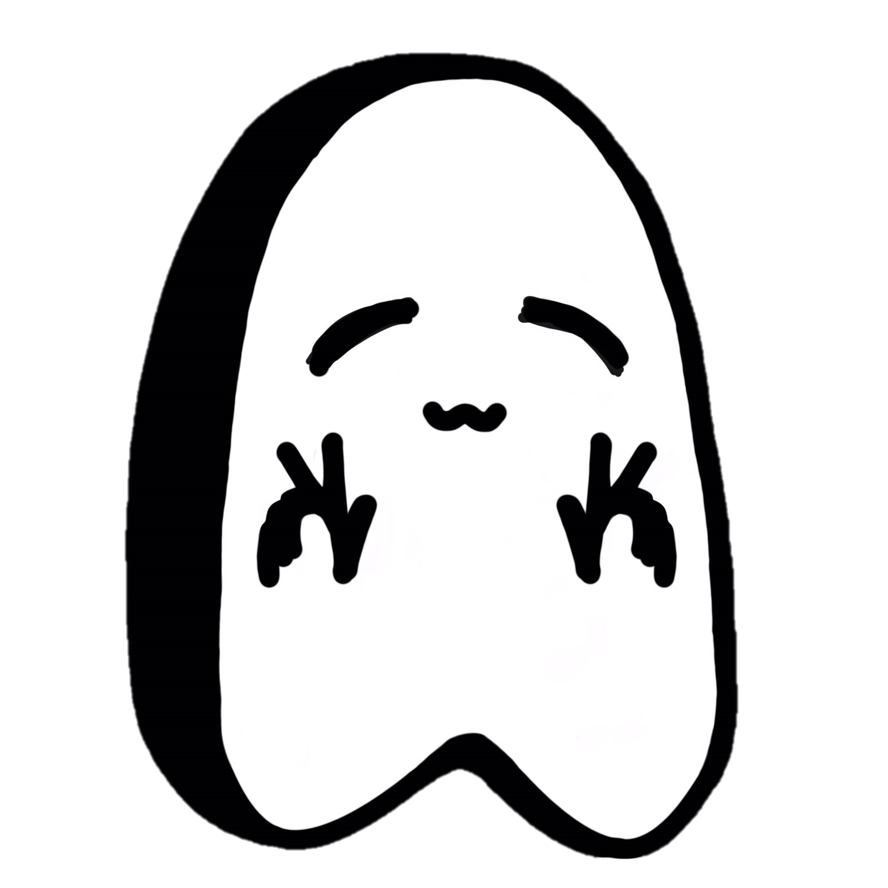

En esta pagina te ofrecemos herramientas para que estudies de manera autodidacta el idioma Japonés.
Aquí podrás encontrar diversos tips que te ayudarán en el estudio, así como:
- Silabario Hiragana/Katakana
- Vocabulario
- Kanji Básico
- Material de Apoyo (hojas para practicar escritura, videos, etc...)
- Datos Interesantes